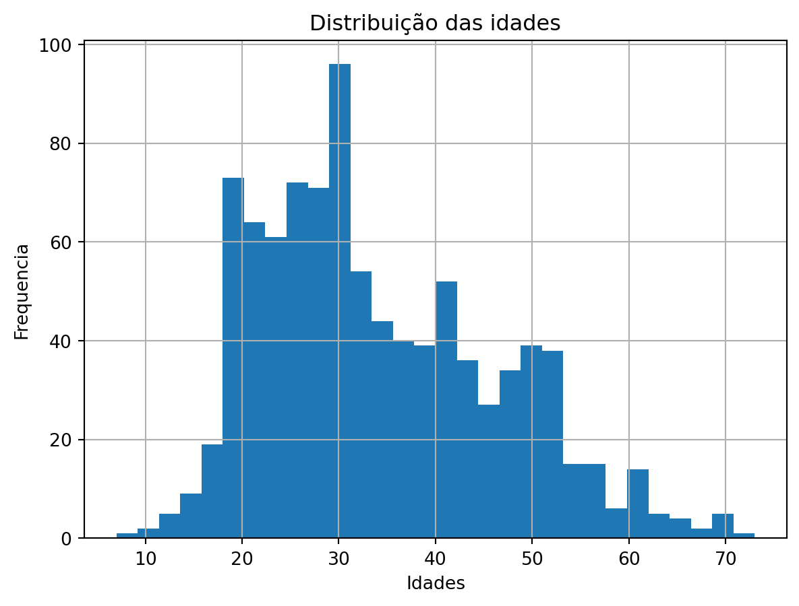
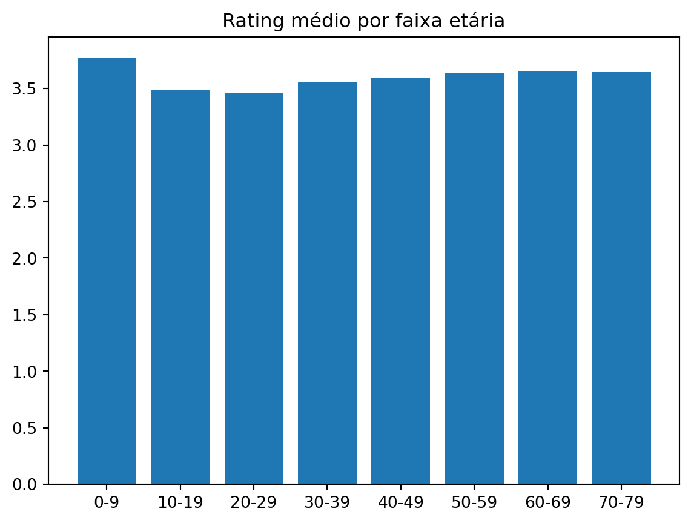
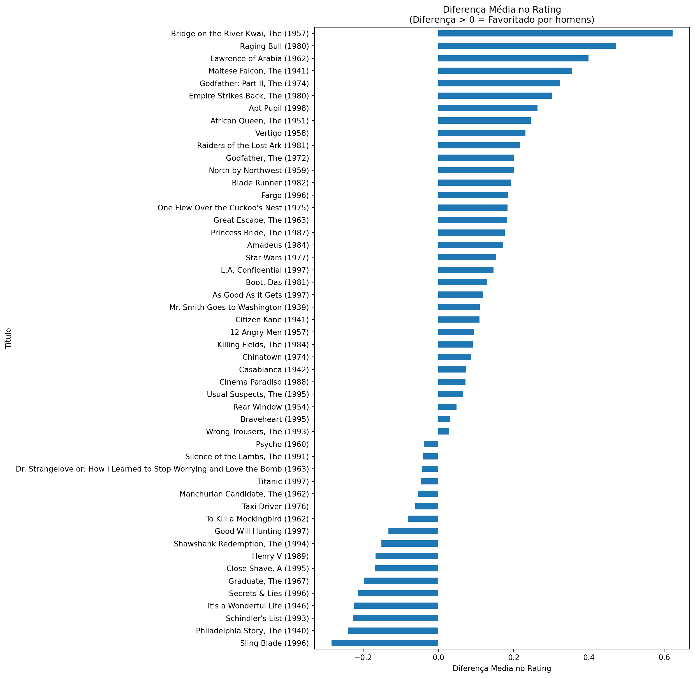

Você pode baixar os dados aqui.
Tutorial 2 - Pandas
Usando Pandas com Movielens
Agora vamos realizar algumas análises mais interessantes.
import pandas as pd
import numpy as np
import matplotlib.pyplot as pltLendo os dados
users = pd.read_csv('pydata2/users.csv')
users.head()| user_id | age | sex | occupation | zip_code | |
|---|---|---|---|---|---|
| 0 | 1 | 24 | M | technician | 85711 |
| 1 | 2 | 53 | F | other | 94043 |
| 2 | 3 | 23 | M | writer | 32067 |
| 3 | 4 | 24 | M | technician | 43537 |
| 4 | 5 | 33 | F | other | 15213 |
users.info()<class 'pandas.core.frame.DataFrame'>
RangeIndex: 943 entries, 0 to 942
Data columns (total 5 columns):
# Column Non-Null Count Dtype
--- ------ -------------- -----
0 user_id 943 non-null int64
1 age 943 non-null int64
2 sex 943 non-null object
3 occupation 943 non-null object
4 zip_code 943 non-null object
dtypes: int64(2), object(3)
memory usage: 37.0+ KBmovies = pd.read_csv('pydata2/movies.csv')
movies.head()| movie_id | title | release_date | video_release_date | imdb_url | |
|---|---|---|---|---|---|
| 0 | 2 | GoldenEye (1995) | 01-Jan-1995 | NaN | http://us.imdb.com/M/title-exact?GoldenEye%20(... |
| 1 | 3 | Four Rooms (1995) | 01-Jan-1995 | NaN | http://us.imdb.com/M/title-exact?Four%20Rooms%... |
| 2 | 4 | Get Shorty (1995) | 01-Jan-1995 | NaN | http://us.imdb.com/M/title-exact?Get%20Shorty%... |
| 3 | 5 | Copycat (1995) | 01-Jan-1995 | NaN | http://us.imdb.com/M/title-exact?Copycat%20(1995) |
| 4 | 6 | Shanghai Triad (Yao a yao yao dao waipo qiao) ... | 01-Jan-1995 | NaN | http://us.imdb.com/Title?Yao+a+yao+yao+dao+wai... |
movies.info()<class 'pandas.core.frame.DataFrame'>
RangeIndex: 1681 entries, 0 to 1680
Data columns (total 5 columns):
# Column Non-Null Count Dtype
--- ------ -------------- -----
0 movie_id 1681 non-null int64
1 title 1681 non-null object
2 release_date 1680 non-null object
3 video_release_date 0 non-null float64
4 imdb_url 1678 non-null object
dtypes: float64(1), int64(1), object(3)
memory usage: 65.8+ KBratings = pd.read_csv('pydata2/ratings.csv')
ratings.head()| user_id | movie_id | rating | unix_timestamp | |
|---|---|---|---|---|
| 0 | 196 | 242 | 3 | 881250949 |
| 1 | 186 | 302 | 3 | 891717742 |
| 2 | 22 | 377 | 1 | 878887116 |
| 3 | 244 | 51 | 2 | 880606923 |
| 4 | 166 | 346 | 1 | 886397596 |
ratings.info()<class 'pandas.core.frame.DataFrame'>
RangeIndex: 100000 entries, 0 to 99999
Data columns (total 4 columns):
# Column Non-Null Count Dtype
--- ------ -------------- -----
0 user_id 100000 non-null int64
1 movie_id 100000 non-null int64
2 rating 100000 non-null int64
3 unix_timestamp 100000 non-null int64
dtypes: int64(4)
memory usage: 3.1 MBJuntando os dados
movie_ratings = pd.merge(movies, ratings, how='right')
lens = pd.merge(movie_ratings, users)
lens.head()| movie_id | title | release_date | video_release_date | imdb_url | user_id | rating | unix_timestamp | age | sex | occupation | zip_code | |
|---|---|---|---|---|---|---|---|---|---|---|---|---|
| 0 | 242 | Kolya (1996) | 24-Jan-1997 | NaN | http://us.imdb.com/M/title-exact?Kolya%20(1996) | 196 | 3 | 881250949 | 49 | M | writer | 55105 |
| 1 | 393 | Mrs. Doubtfire (1993) | 01-Jan-1993 | NaN | http://us.imdb.com/M/title-exact?Mrs.%20Doubtf... | 196 | 4 | 881251863 | 49 | M | writer | 55105 |
| 2 | 381 | Muriel's Wedding (1994) | 01-Jan-1994 | NaN | http://us.imdb.com/M/title-exact?Muriel's%20We... | 196 | 4 | 881251728 | 49 | M | writer | 55105 |
| 3 | 251 | Shall We Dance? (1996) | 11-Jul-1997 | NaN | http://us.imdb.com/M/title-exact?Shall%20we%20... | 196 | 3 | 881251274 | 49 | M | writer | 55105 |
| 4 | 655 | Stand by Me (1986) | 01-Jan-1986 | NaN | http://us.imdb.com/M/title-exact?Stand%20by%20... | 196 | 5 | 881251793 | 49 | M | writer | 55105 |
lens.info()<class 'pandas.core.frame.DataFrame'>
RangeIndex: 100000 entries, 0 to 99999
Data columns (total 12 columns):
# Column Non-Null Count Dtype
--- ------ -------------- -----
0 movie_id 100000 non-null int64
1 title 99548 non-null object
2 release_date 99539 non-null object
3 video_release_date 0 non-null float64
4 imdb_url 99535 non-null object
5 user_id 100000 non-null int64
6 rating 100000 non-null int64
7 unix_timestamp 100000 non-null int64
8 age 100000 non-null int64
9 sex 100000 non-null object
10 occupation 100000 non-null object
11 zip_code 100000 non-null object
dtypes: float64(1), int64(5), object(6)
memory usage: 9.2+ MBAnálise Exploratória de Dados
Quais são os 25 filmes mais avaliados?
best = lens.groupby('title').count().reset_index()[['title','movie_id']].rename(columns={'movie_id':'count'}).sort_values('count',
ascending=False)
best.head(25)| title | count | |
|---|---|---|
| 1398 | Star Wars (1977) | 583 |
| 333 | Contact (1997) | 509 |
| 498 | Fargo (1996) | 508 |
| 1234 | Return of the Jedi (1983) | 507 |
| 860 | Liar Liar (1997) | 485 |
| 460 | English Patient, The (1996) | 481 |
| 1284 | Scream (1996) | 478 |
| 32 | Air Force One (1997) | 431 |
| 744 | Independence Day (ID4) (1996) | 429 |
| 1205 | Raiders of the Lost Ark (1981) | 420 |
| 612 | Godfather, The (1972) | 413 |
| 1190 | Pulp Fiction (1994) | 394 |
| 1542 | Twelve Monkeys (1995) | 392 |
| 1329 | Silence of the Lambs, The (1991) | 390 |
| 780 | Jerry Maguire (1996) | 384 |
| 293 | Chasing Amy (1997) | 379 |
| 1251 | Rock, The (1996) | 378 |
| 456 | Empire Strikes Back, The (1980) | 367 |
| 1394 | Star Trek: First Contact (1996) | 365 |
| 113 | Back to the Future (1985) | 350 |
| 1500 | Titanic (1997) | 350 |
| 987 | Mission: Impossible (1996) | 344 |
| 570 | Fugitive, The (1993) | 336 |
| 747 | Indiana Jones and the Last Crusade (1989) | 331 |
| 1632 | Willy Wonka and the Chocolate Factory (1971) | 326 |
Outra forma de fazer o mesmo (porém, neste caso retorna uma Pandas series:
best2 = lens.title.value_counts()[:25]
best2title
Star Wars (1977) 583
Contact (1997) 509
Fargo (1996) 508
Return of the Jedi (1983) 507
Liar Liar (1997) 485
English Patient, The (1996) 481
Scream (1996) 478
Air Force One (1997) 431
Independence Day (ID4) (1996) 429
Raiders of the Lost Ark (1981) 420
Godfather, The (1972) 413
Pulp Fiction (1994) 394
Twelve Monkeys (1995) 392
Silence of the Lambs, The (1991) 390
Jerry Maguire (1996) 384
Chasing Amy (1997) 379
Rock, The (1996) 378
Empire Strikes Back, The (1980) 367
Star Trek: First Contact (1996) 365
Back to the Future (1985) 350
Titanic (1997) 350
Mission: Impossible (1996) 344
Fugitive, The (1993) 336
Indiana Jones and the Last Crusade (1989) 331
Willy Wonka and the Chocolate Factory (1971) 326
Name: count, dtype: int64Quais são os filmes com as maiores notas?
movie_stats = lens.groupby('title').agg({'occupation':'count',
'rating':'mean','age':'mean'}).sort_values('rating', ascending=False).rename(columns={'occupation':'count','age':'mean_age'}).round(decimals=2)
movie_stats| count | rating | mean_age | |
|---|---|---|---|
| title | |||
| Santa with Muscles (1996) | 2 | 5.0 | 26.50 |
| Saint of Fort Washington, The (1993) | 2 | 5.0 | 24.00 |
| Prefontaine (1997) | 3 | 5.0 | 29.00 |
| Marlene Dietrich: Shadow and Light (1996) | 1 | 5.0 | 60.00 |
| Someone Else's America (1995) | 1 | 5.0 | 27.00 |
| ... | ... | ... | ... |
| Man from Down Under, The (1943) | 1 | 1.0 | 22.00 |
| Good Morning (1971) | 1 | 1.0 | 26.00 |
| Bird of Prey (1996) | 1 | 1.0 | 26.00 |
| Gordy (1995) | 3 | 1.0 | 28.33 |
| Power 98 (1995) | 1 | 1.0 | 47.00 |
1663 rows × 3 columns
Os filmes acima são avaliados tão raramente, que nem podemos qualificá-los como top filmes. Que tal apenas olharmos os filmes que foram avaliados pelo menos 100 vezes.
movie_stats.query('count >= 100')| count | rating | mean_age | |
|---|---|---|---|
| title | |||
| Close Shave, A (1995) | 112 | 4.49 | 31.44 |
| Schindler's List (1993) | 298 | 4.47 | 33.45 |
| Wrong Trousers, The (1993) | 118 | 4.47 | 31.55 |
| Casablanca (1942) | 243 | 4.46 | 35.90 |
| Shawshank Redemption, The (1994) | 283 | 4.45 | 32.81 |
| ... | ... | ... | ... |
| Spawn (1997) | 143 | 2.62 | 28.29 |
| Event Horizon (1997) | 127 | 2.57 | 31.08 |
| Crash (1996) | 128 | 2.55 | 32.45 |
| Jungle2Jungle (1997) | 132 | 2.44 | 32.27 |
| Cable Guy, The (1996) | 106 | 2.34 | 28.43 |
337 rows × 3 columns
outra forma de fazer o mesmo:
atleast_100 = movie_stats['count'] >= 100
atleast_100_movies = movie_stats[atleast_100]
atleast_100_movies| count | rating | mean_age | |
|---|---|---|---|
| title | |||
| Close Shave, A (1995) | 112 | 4.49 | 31.44 |
| Schindler's List (1993) | 298 | 4.47 | 33.45 |
| Wrong Trousers, The (1993) | 118 | 4.47 | 31.55 |
| Casablanca (1942) | 243 | 4.46 | 35.90 |
| Shawshank Redemption, The (1994) | 283 | 4.45 | 32.81 |
| ... | ... | ... | ... |
| Spawn (1997) | 143 | 2.62 | 28.29 |
| Event Horizon (1997) | 127 | 2.57 | 31.08 |
| Crash (1996) | 128 | 2.55 | 32.45 |
| Jungle2Jungle (1997) | 132 | 2.44 | 32.27 |
| Cable Guy, The (1996) | 106 | 2.34 | 28.43 |
337 rows × 3 columns
Como se distribuem as idades?
Vamos criar um gráfico mostrando a distribuição das idades.
pandas tem um integração nativa com a biblioteca matplotlib que permite a plotagem de Series/DataFrames ficarem mais fáceis ainda. Neste caso apenas chamamos o método histo na coluna que queremos produzir o histograma. Nós podemos também chamar o matplotlib.pyplot para customizar o nosso gráfico um pouco. (sempre lembrar de rotular seus eixos!)
users.age.hist(bins=30)
# Add title and labels
plt.title('Distribuição das idades')
plt.xlabel('Idades')
plt.ylabel('Frequencia')
# Show the plot
plt.show()
Eu não acho muito legal comparar nossas idades individuais, portanto vamos binarizar nossos usuários em groupos por idade usando o pd.cut.
labels = ['0-9', '10-19', '20-29', '30-39', '40-49', '50-59', '60-69', '70-79']
lens['age_group'] = pd.cut(lens.age, range(0, 81, 10), right=False, labels=labels)
lens[['title','age','age_group']]| title | age | age_group | |
|---|---|---|---|
| 0 | Kolya (1996) | 49 | 40-49 |
| 1 | Mrs. Doubtfire (1993) | 49 | 40-49 |
| 2 | Muriel's Wedding (1994) | 49 | 40-49 |
| 3 | Shall We Dance? (1996) | 49 | 40-49 |
| 4 | Stand by Me (1986) | 49 | 40-49 |
| ... | ... | ... | ... |
| 99995 | City of Lost Children, The (1995) | 20 | 20-29 |
| 99996 | Heat (1995) | 20 | 20-29 |
| 99997 | NaN | 20 | 20-29 |
| 99998 | Liar Liar (1997) | 20 | 20-29 |
| 99999 | Waiting for Guffman (1996) | 20 | 20-29 |
100000 rows × 3 columns
Vimos que há uma valor ‘NaN’ no título, vamos conferior melhor:
lens.isna().sum()movie_id 0
title 452
release_date 461
video_release_date 100000
imdb_url 465
user_id 0
rating 0
unix_timestamp 0
age 0
sex 0
occupation 0
zip_code 0
age_group 0
dtype: int64Vamos eliminar os ‘NaN’:
lens = lens.dropna(subset=['title'])
lens| movie_id | title | release_date | video_release_date | imdb_url | user_id | rating | unix_timestamp | age | sex | occupation | zip_code | age_group | |
|---|---|---|---|---|---|---|---|---|---|---|---|---|---|
| 0 | 242 | Kolya (1996) | 24-Jan-1997 | NaN | http://us.imdb.com/M/title-exact?Kolya%20(1996) | 196 | 3 | 881250949 | 49 | M | writer | 55105 | 40-49 |
| 1 | 393 | Mrs. Doubtfire (1993) | 01-Jan-1993 | NaN | http://us.imdb.com/M/title-exact?Mrs.%20Doubtf... | 196 | 4 | 881251863 | 49 | M | writer | 55105 | 40-49 |
| 2 | 381 | Muriel's Wedding (1994) | 01-Jan-1994 | NaN | http://us.imdb.com/M/title-exact?Muriel's%20We... | 196 | 4 | 881251728 | 49 | M | writer | 55105 | 40-49 |
| 3 | 251 | Shall We Dance? (1996) | 11-Jul-1997 | NaN | http://us.imdb.com/M/title-exact?Shall%20we%20... | 196 | 3 | 881251274 | 49 | M | writer | 55105 | 40-49 |
| 4 | 655 | Stand by Me (1986) | 01-Jan-1986 | NaN | http://us.imdb.com/M/title-exact?Stand%20by%20... | 196 | 5 | 881251793 | 49 | M | writer | 55105 | 40-49 |
| ... | ... | ... | ... | ... | ... | ... | ... | ... | ... | ... | ... | ... | ... |
| 99994 | 300 | Air Force One (1997) | 01-Jan-1997 | NaN | http://us.imdb.com/M/title-exact?Air+Force+One... | 941 | 4 | 875048495 | 20 | M | student | 97229 | 20-29 |
| 99995 | 919 | City of Lost Children, The (1995) | 01-Jan-1995 | NaN | http://us.imdb.com/Title?Cit%E9+des+enfants+pe... | 941 | 5 | 875048887 | 20 | M | student | 97229 | 20-29 |
| 99996 | 273 | Heat (1995) | 01-Jan-1995 | NaN | http://us.imdb.com/M/title-exact?Heat%20(1995) | 941 | 3 | 875049038 | 20 | M | student | 97229 | 20-29 |
| 99998 | 294 | Liar Liar (1997) | 21-Mar-1997 | NaN | http://us.imdb.com/Title?Liar+Liar+(1997) | 941 | 4 | 875048532 | 20 | M | student | 97229 | 20-29 |
| 99999 | 1007 | Waiting for Guffman (1996) | 31-Jan-1997 | NaN | http://us.imdb.com/M/title-exact?Waiting%20for... | 941 | 4 | 875049077 | 20 | M | student | 97229 | 20-29 |
99548 rows × 13 columns
Vamos verificar a contagem e o rating médio por cada faixa etária:
lens_age = lens.groupby('age_group').agg({'rating': 'mean', 'title':'count'})
lens_age| rating | title | |
|---|---|---|
| age_group | ||
| 0-9 | 3.767442 | 43 |
| 10-19 | 3.485511 | 8144 |
| 20-29 | 3.465155 | 39346 |
| 30-39 | 3.552180 | 25575 |
| 40-49 | 3.591265 | 14951 |
| 50-59 | 3.635389 | 8675 |
| 60-69 | 3.649351 | 2618 |
| 70-79 | 3.642857 | 196 |
Jovens usuários tendem ser mais críticos que os outros grupos por faixa etária.
E vamos fazer um gráfico com estas informações.
plt.bar(lens_age.index,lens_age['rating'])
plt.title("Rating médio por faixa etária")
plt.show()
Vamos olhar apenas para os 50 filmes mais avaliados e ver como eles são vistos por cada grupo.
best50 = atleast_100_movies.head(50)
best50.info()<class 'pandas.core.frame.DataFrame'>
Index: 50 entries, Close Shave, A (1995) to Apt Pupil (1998)
Data columns (total 3 columns):
# Column Non-Null Count Dtype
--- ------ -------------- -----
0 count 50 non-null int64
1 rating 50 non-null float64
2 mean_age 50 non-null float64
dtypes: float64(2), int64(1)
memory usage: 1.6+ KBbest50.head(5)| count | rating | mean_age | |
|---|---|---|---|
| title | |||
| Close Shave, A (1995) | 112 | 4.49 | 31.44 |
| Schindler's List (1993) | 298 | 4.47 | 33.45 |
| Wrong Trousers, The (1993) | 118 | 4.47 | 31.55 |
| Casablanca (1942) | 243 | 4.46 | 35.90 |
| Shawshank Redemption, The (1994) | 283 | 4.45 | 32.81 |
lens50 = lens.set_index('title')
lens50.info()<class 'pandas.core.frame.DataFrame'>
Index: 99548 entries, Kolya (1996) to Waiting for Guffman (1996)
Data columns (total 12 columns):
# Column Non-Null Count Dtype
--- ------ -------------- -----
0 movie_id 99548 non-null int64
1 release_date 99539 non-null object
2 video_release_date 0 non-null float64
3 imdb_url 99535 non-null object
4 user_id 99548 non-null int64
5 rating 99548 non-null int64
6 unix_timestamp 99548 non-null int64
7 age 99548 non-null int64
8 sex 99548 non-null object
9 occupation 99548 non-null object
10 zip_code 99548 non-null object
11 age_group 99548 non-null category
dtypes: category(1), float64(1), int64(5), object(5)
memory usage: 9.2+ MBby_age = lens50.loc[best50.index]
by_age.reset_index()| title | movie_id | release_date | video_release_date | imdb_url | user_id | rating | unix_timestamp | age | sex | occupation | zip_code | age_group | |
|---|---|---|---|---|---|---|---|---|---|---|---|---|---|
| 0 | Close Shave, A (1995) | 408 | 28-Apr-1996 | NaN | http://us.imdb.com/M/title-exact?Close%20Shave... | 305 | 5 | 886323189 | 23 | M | programmer | 94086 | 20-29 |
| 1 | Close Shave, A (1995) | 408 | 28-Apr-1996 | NaN | http://us.imdb.com/M/title-exact?Close%20Shave... | 6 | 4 | 883599075 | 42 | M | executive | 98101 | 40-49 |
| 2 | Close Shave, A (1995) | 408 | 28-Apr-1996 | NaN | http://us.imdb.com/M/title-exact?Close%20Shave... | 286 | 4 | 875806800 | 27 | M | student | 15217 | 20-29 |
| 3 | Close Shave, A (1995) | 408 | 28-Apr-1996 | NaN | http://us.imdb.com/M/title-exact?Close%20Shave... | 303 | 4 | 879467035 | 19 | M | student | 14853 | 10-19 |
| 4 | Close Shave, A (1995) | 408 | 28-Apr-1996 | NaN | http://us.imdb.com/M/title-exact?Close%20Shave... | 299 | 4 | 877877847 | 29 | M | doctor | 63108 | 20-29 |
| ... | ... | ... | ... | ... | ... | ... | ... | ... | ... | ... | ... | ... | ... |
| 11173 | Apt Pupil (1998) | 315 | 23-Oct-1998 | NaN | http://us.imdb.com/Title?Apt+Pupil+(1998) | 931 | 5 | 891037577 | 60 | M | educator | 33556 | 60-69 |
| 11174 | Apt Pupil (1998) | 315 | 23-Oct-1998 | NaN | http://us.imdb.com/Title?Apt+Pupil+(1998) | 934 | 4 | 891188403 | 61 | M | engineer | 22902 | 60-69 |
| 11175 | Apt Pupil (1998) | 315 | 23-Oct-1998 | NaN | http://us.imdb.com/Title?Apt+Pupil+(1998) | 940 | 4 | 884801125 | 32 | M | administrator | 02215 | 30-39 |
| 11176 | Apt Pupil (1998) | 315 | 23-Oct-1998 | NaN | http://us.imdb.com/Title?Apt+Pupil+(1998) | 942 | 4 | 891282355 | 48 | F | librarian | 78209 | 40-49 |
| 11177 | Apt Pupil (1998) | 315 | 23-Oct-1998 | NaN | http://us.imdb.com/Title?Apt+Pupil+(1998) | 926 | 4 | 888351623 | 49 | M | entertainment | 01701 | 40-49 |
11178 rows × 13 columns
by_age.groupby(['title','age_group']).agg({'rating': 'mean'})| rating | ||
|---|---|---|
| title | age_group | |
| 12 Angry Men (1957) | 0-9 | NaN |
| 10-19 | 4.500000 | |
| 20-29 | 4.230769 | |
| 30-39 | 4.382353 | |
| 40-49 | 4.500000 | |
| ... | ... | ... |
| Wrong Trousers, The (1993) | 30-39 | 4.558824 |
| 40-49 | 4.538462 | |
| 50-59 | 4.625000 | |
| 60-69 | 5.000000 | |
| 70-79 | NaN |
400 rows × 1 columns
Quais são os filmes que mulheres e homens mais se diferem em gostos ?
lens.indexIndex([ 0, 1, 2, 3, 4, 5, 6, 7, 8, 9,
...
99989, 99990, 99991, 99992, 99993, 99994, 99995, 99996, 99998, 99999],
dtype='int64', length=99548)pivoted = lens.pivot_table(index=['title'],
columns=['sex'],
values='rating',
fill_value=0)
pivoted.head(5)| sex | F | M |
|---|---|---|
| title | ||
| 'Til There Was You (1997) | 2.200000 | 2.500000 |
| 1-900 (1994) | 1.000000 | 3.000000 |
| 101 Dalmatians (1996) | 3.116279 | 2.772727 |
| 12 Angry Men (1957) | 4.269231 | 4.363636 |
| 187 (1997) | 3.500000 | 2.870968 |
Vamos calcular a diferença entre as notas de homens e mulheres:
pivoted['diff']=pivoted.M - pivoted.F
pivoted.head(5)| sex | F | M | diff |
|---|---|---|---|
| title | |||
| 'Til There Was You (1997) | 2.200000 | 2.500000 | 0.300000 |
| 1-900 (1994) | 1.000000 | 3.000000 | 2.000000 |
| 101 Dalmatians (1996) | 3.116279 | 2.772727 | -0.343552 |
| 12 Angry Men (1957) | 4.269231 | 4.363636 | 0.094406 |
| 187 (1997) | 3.500000 | 2.870968 | -0.629032 |
disagreements = pivoted[pivoted.index.isin(best50.index)]['diff']disagreements_sorted = disagreements.sort_values()
disagreements_sortedtitle
Sling Blade (1996) -0.284314
Philadelphia Story, The (1940) -0.239583
Schindler's List (1993) -0.226519
It's a Wonderful Life (1946) -0.224182
Secrets & Lies (1996) -0.212963
Graduate, The (1967) -0.198571
Close Shave, A (1995) -0.169213
Henry V (1989) -0.167255
Shawshank Redemption, The (1994) -0.151541
Good Will Hunting (1997) -0.132911
To Kill a Mockingbird (1962) -0.081159
Taxi Driver (1976) -0.061303
Manchurian Candidate, The (1962) -0.054348
Titanic (1997) -0.047139
Dr. Strangelove or: How I Learned to Stop Worrying and Love the Bomb (1963) -0.044608
Silence of the Lambs, The (1991) -0.040690
Psycho (1960) -0.038637
Wrong Trousers, The (1993) 0.028083
Braveheart (1995) 0.031136
Rear Window (1954) 0.048148
Usual Suspects, The (1995) 0.065728
Cinema Paradiso (1988) 0.071970
Casablanca (1942) 0.073404
Chinatown (1974) 0.087179
Killing Fields, The (1984) 0.091039
12 Angry Men (1957) 0.094406
Citizen Kane (1941) 0.109337
Mr. Smith Goes to Washington (1939) 0.110000
As Good As It Gets (1997) 0.119048
Boot, Das (1981) 0.129814
L.A. Confidential (1997) 0.146463
Star Wars (1977) 0.153115
Amadeus (1984) 0.172094
Princess Bride, The (1987) 0.176333
Great Escape, The (1963) 0.182092
One Flew Over the Cuckoo's Nest (1975) 0.183333
Fargo (1996) 0.185044
Blade Runner (1982) 0.192640
North by Northwest (1959) 0.200366
Godfather, The (1972) 0.201082
Raiders of the Lost Ark (1981) 0.217328
Vertigo (1958) 0.231177
African Queen, The (1951) 0.245614
Apt Pupil (1998) 0.263323
Empire Strikes Back, The (1980) 0.300964
Godfather: Part II, The (1974) 0.323521
Maltese Falcon, The (1941) 0.355844
Lawrence of Arabia (1962) 0.398715
Raging Bull (1980) 0.471655
Bridge on the River Kwai, The (1957) 0.621978
Name: diff, dtype: float64# Create the horizontal bar plot
disagreements_sorted.plot(kind='barh', figsize=[9, 15])
# Add title and labels
plt.title('Diferença Média no Rating\n(Diferença > 0 = Favoritado por homens)')
plt.ylabel('Título')
plt.xlabel('Diferença Média no Rating')
# Show the plot
plt.show()